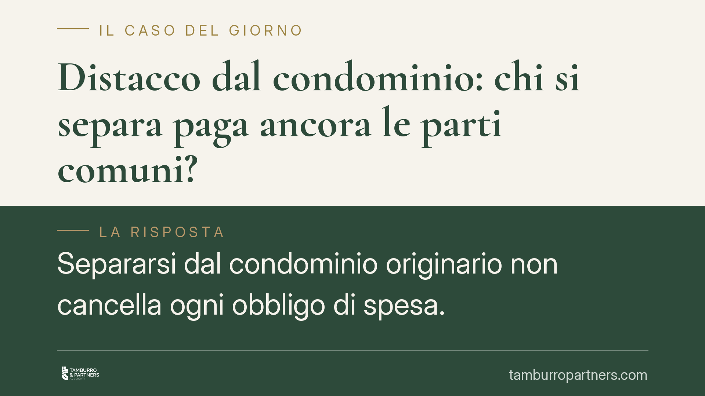

Distacco dal condominio: chi si separa paga ancora le parti comuni?
Separarsi dal condominio originario non cancella ogni obbligo di spesa. Secondo l'orientamento consolidato della Cassazione, chi resta comproprietario di beni comuni continua a contribuire ai relativi costi, anche quando non li utilizza. Un tema concreto per i proprietari di villette inserite in ex condomini oggi configurati come supercondominio.

Il caso tipico
Un proprietario di villetta, un tempo parte di un condominio, chiede di "distaccarsi" dalla gestione comune. Convinto che la separazione lo liberi da ogni onere, smette di versare le quote. Il condominio, o il supercondominio subentrato, continua invece a reclamare la contribuzione per strade interne, impianti, aree verdi e altri beni rimasti in comproprietà.
La domanda è ricorrente: il distacco formale dalla gestione elimina l'obbligo di pagare le spese per le parti comuni? La risposta della giurisprudenza è negativa, e il fondamento è nel modo in cui il codice civile lega il diritto sul bene comune all'obbligo di contribuire ai suoi costi.
Inquadramento normativo
Il riferimento centrale è l'art. 1118 c.c., che fissa la regola di base: il diritto di ciascun condòmino sulle parti comuni è proporzionale al valore della sua unità, e da questo diritto discende l'obbligo di partecipare alle spese. Finché si resta comproprietari del bene comune, l'obbligo contributivo permane.
Lo stesso articolo, al comma 4, disciplina l'unica ipotesi di "distacco" espressamente regolata: quella dall'impianto centralizzato di riscaldamento o condizionamento. Chi si distacca resta comunque tenuto a concorrere alle spese di manutenzione straordinaria e a quelle per la conservazione e la messa a norma dell'impianto. Anche in questo caso, dunque, il distacco non è una liberazione integrale.
Va poi considerato l'art. 1119 c.c., secondo cui le parti comuni non sono divisibili se la divisione rende l'uso della cosa meno comodo per gli altri comproprietari. L'indivisibilità spiega perché il singolo non possa, di fatto, sottrarsi unilateralmente al regime comune dei beni che restano condivisi.
Quando il complesso è composto da più edifici o unità autonome che condividono alcuni beni (viali, cancelli, impianti), si applica l'art. 1117-bis c.c., che estende la disciplina del condominio al cosiddetto supercondominio. I beni comuni ai diversi fabbricati seguono così le regole condominiali, compreso l'obbligo di contribuzione.
Implicazioni pratiche
L'equivoco nasce dalla confusione tra due piani distinti: l'uso effettivo del bene e la comproprietà del bene. L'obbligo di spesa non dipende dal fatto che il singolo utilizzi concretamente la strada interna o l'area verde, ma dalla titolarità del diritto su quelle parti. Chi è comproprietario contribuisce, anche se usa poco o nulla.
Il "distacco" dalla gestione, inteso come uscita dall'amministrazione comune, non equivale a una cessione della quota di comproprietà. Se il bene resta in comune, l'onere resta. La rinuncia al diritto, dove ammessa, segue regole precise e non si realizza con una semplice dichiarazione di volersi separare.
Sul piano del recupero crediti, gli oneri condominiali non pagati possono essere richiesti dall'amministratore con decreto ingiuntivo immediatamente esecutivo, ai sensi dell'art. 63 disp. att. c.c. Questo rende il contenzioso rapido per il creditore e più oneroso per chi omette i versamenti confidando nell'avvenuto distacco.
Cosa fare in concreto
- Verificate il titolo di proprietà. Controllate quali beni comuni risultano effettivamente in comproprietà secondo l'atto di acquisto e le tabelle millesimali: l'obbligo segue questa titolarità.
- Distinguete distacco di gestione da cessione della quota. Chiarite se la separazione riguarda solo l'amministrazione o incide sulla comproprietà dei beni: solo la seconda può ridurre gli oneri.
- Esaminate la delibera o l'accordo di distacco. Leggete con attenzione le condizioni pattuite, in particolare quali spese restano a carico e per quali beni.
- Non sospendete i pagamenti unilateralmente. L'omesso versamento espone al decreto ingiuntivo immediatamente esecutivo e agli interessi, senza sanare la contestazione di fondo.
- Documentate l'uso e i beni condivisi. In caso di contestazione, raccogliete planimetrie, regolamento e verbali utili a definire il perimetro della contribuzione dovuta.
Disclaimer
Contributo informativo a cura di Tamburro & Partners - Avv. Giuseppe Tamburro. Non costituisce parere legale.
Ogni condominio ha una storia a sé.
Se gestisci un'amministrazione e vuoi un confronto su una specifica questione condominiale, scrivi allo studio. Ti rispondiamo entro un giorno lavorativo.